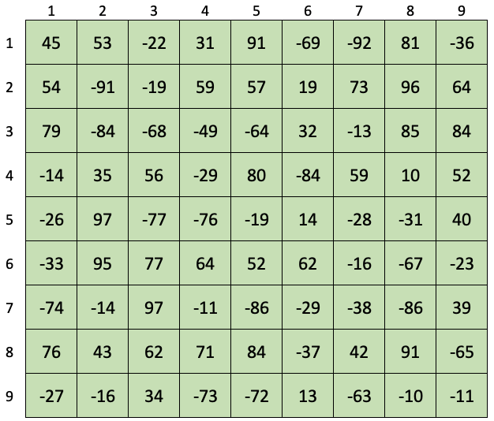

Homework 01 — Treasure Map
For this assignment you are to write a Java program that will search a "Treasure Map" looking for the hidden treasure. The treasure map is a 9 × 9 grid, with the rows and columns numbered from 1 to 9. Each grid cell contains a two-digit integer that can be either positive or negative. The treasure is one of the negative numbers, but you don't know which one. If you start in the right cell, the positive numbers are clues which you can follow to the treasure. For each clue (which will always be positive) the ten's digit represents the row number and the unit's digit represents the column number of the next cell you should visit. So the number 64 would mean you should examine row 6, column 4 next. When you reach a negative number, you've found the treasure.
Example
Starting at position 43 in the below treasure map, the sequence of cells visited is: 43, 56, 14, 31, 79, 39, 84, 71. We stop at cell 71 since it contains a negative value. So the treasure is -74.
Input File
You program will need to read a map and starting position from a text file namedmap.txt. The text file contains ten lines. The first nine lines each contain nine numbers, separated by white space. This is the treasure map. The tenth line contains a single number, which is the starting location for the map. The file for our example is shown below. When I grade your program I will use a different input file, and thus a different map and starting location.
45 53 -22 31 91 -69 -92 81 -36
54 -91 -19 59 57 19 73 96 64
79 -84 -68 -49 -64 32 -13 85 84
-14 35 56 -29 80 -84 59 10 52
-26 97 -77 -76 -19 14 -28 -31 40
-33 95 77 64 52 62 -16 -67 -23
-74 -14 97 -11 -86 -29 -38 -86 39
76 43 62 71 84 -37 42 91 -65
-27 -16 34 -73 -72 13 -63 -10 -11
43
Required Data Structure
You are required to read the entire input file into a single int array. The array will be a jagged 2-dimensional array, where the first nine rows each have length nine and the 10th row has length 1.Required Output
Your program is to display the treasure map, formatted as shown in the Sample Run below (note the row and column numbers). Below the map the sequence of locations examined are to be displayed. At the end should be a message saying what the value of the treasure is. The format your your output should match the format of the Sample Run (but the actual values will be different).Sample Run
Below is an example of how your program output should be formatted when it runs (your values will be different though).
|
What to Turn In
Create a zip file containing your entire NetBeans folder and submit the zip file through Blackboard.